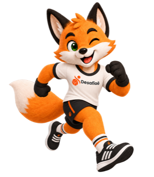

Corrida10 km
Vale até 05/10 · 23:30
Ranking
B
Bia Moreira4:49 /km
48:122M
Marina Costa5:10 /km
51:40Em corrida, CrossFit e Hyrox não tem placar nem time: cada um faz a prova onde e quando quiser e lança a própria marca, que entra num ranking. Você desafia alguém, chama mais gente se quiser, e todo mundo lança a marca até a data limite. Do mesmo jeito existe a partida de marca aberta, que qualquer pessoa encontra e entra.
Informações do desafio
Defina os detalhes do desafio.
Informações do desafio
Todo mundo corre a mesma distância, onde e quando quiser. Vence o menor tempo lançado até a data limite.
Distância
Informações do desafio
Todo mundo faz o mesmo WOD, onde e quando quiser. RX fica na frente de Scaled no ranking.
Tipo de WOD
WOD
Chame mais gente
Opcional. Cada um faz por si e todo mundo entra no mesmo ranking.
Participantes · 3
Marina Costa
Rival
Caio Nunes
Selecionado
Sugeridos

Duda Martins

Revisar e lançar
Revise e lance seu desafio.
Detalhes
Provocação
“Hoje o ranking muda.”
Observações
Vale esteira ou rua, só manda o print do relógio no grupo.
Desafio lançado!
Agora é fazer e lançar sua marca até a data limite.
10 km
Corrida
Ranking
“Hoje o ranking muda.”
Denunciar10 km
Corrida
Ranking
“Hoje o ranking muda.”
10 km
Corrida
Quanto tempo você levou pra correr 10 km?
Ritmo: 4:49 /km
AMRAP
CrossFit
Quantos rounds completos e reps a mais você fez?
Como você fez o WOD?
10 km
Corrida
Ranking
+3 pts
Pontos ganhos nesse desafio
“Hoje o ranking muda.”

Corrida10 km
Ranking
Partidas em arena ficam pendentes até ela aprovar.
Cada participante lança a própria marca até 24h depois desse horário.
Distância
Nível do jogo


Visibilidade
Vagas
Corrida
ConfirmadaLance sua marca até 29/09 às 06:30.
Tati Freitas22:05Bia Moreira23:41Léo Andrade24:30Nanda RibeiroSem marca ainda Iago SouzaConvite pendente
Iago SouzaConvite pendenteCorrida
ConcluídaTati Freitas22:05Bia Moreira23:41Léo Andrade24:30Nanda RibeiroSem marca aindaEste jogo já foi encerrado — só é possível visualizar.
No desafio de marca, não: cada um faz a prova onde quiser. Já a partida de marca aberta exige arena.
Na corrida e no Hyrox vence o menor tempo lançado até a data limite. No CrossFit, quem fez RX fica na frente de quem fez Scaled.
A melhor marca leva 3 pontos, e quem lançou marca leva 1.
Sim, enquanto o resultado não fecha. Abra de novo a folha da marca: ela já vem com o que você lançou, pronta para corrigir.
Do horário da partida até 24 horas depois.